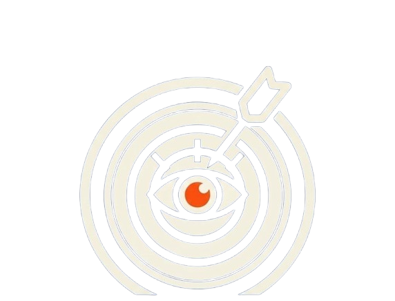
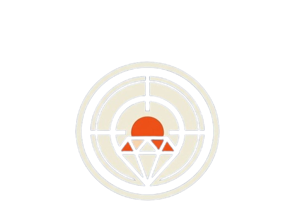

History of AuraX
AuraX was founded as a student initiative to create a space where technology enthusiasts, developers, and innovators could collaborate and transform ideas into real solutions.
The concept emerged when students and mentors recognized the need for a practical environment that complements classroom learning. Instead of only studying theory, students needed a place where they could experiment, build projects, and solve real-world problems.
AuraX was established at the university as a hub for coding, creativity, and innovation. The founding members began building a community focused on learning modern technologies such as software development, artificial intelligence, and digital innovation.Today, AuraX continues to grow as a collaborative ecosystem where students develop skills, launch projects, and contribute to technological advancement.
Mission & Vision
AuraX Coding and Innovation Hub aims to empower university students with practical coding, innovation, and problem-solving skills through structured learning, hands-on projects, and mentorship.
Our vision is to build a strong technology community starting from Mekelle University and expanding across Tigray, where students become skilled developers, innovators, and leaders who drive digital transformation and craft impactful solutions for society.

Goals & Values
Our goal is to develop a scalable learning ecosystem that takes students from beginners to advanced developers while encouraging collaboration, innovation, and real-world project experience.
The hub is guided by inclusivity, teamwork, continuous learning, integrity, and community impact, ensuring that knowledge and opportunities reach universities, schools, and communities across the region.
